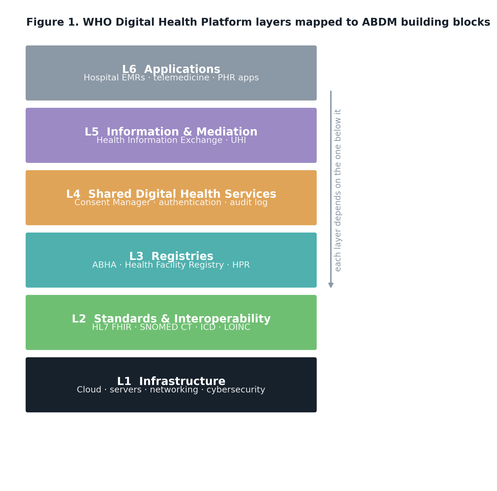
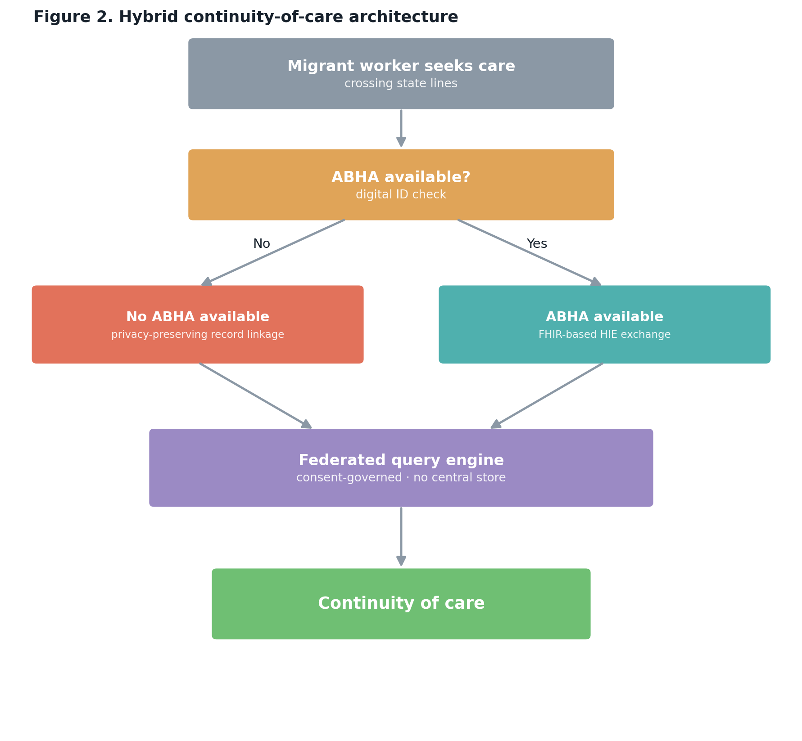

Kerala State Planning Board · Student Internship Proposal 2026–27
ABDM CareBridge
Assessing ABDM's Design-Reality Gap for Kerala's Interstate Informal Migrant Workforce — a systems analysis of continuity-of-care barriers.
India's Ayushman Bharat Digital Mission was built for a patient who stays in one place. Kerala's interstate informal migrant workforce — an estimated 3.1 million, projected to reach 4.5 million by 2025 — doesn't. This project maps exactly where that assumption breaks, and prototypes a fix.
9 stages in the patient journey studied9 literature sources synthesized2 architecture diagramsopen-source prototype, MIT licensed
01 — The problem
A digital-by-default system, for a population that isn't
ABDM's continuity-of-care model runs on ABHA: a stable digital identity linked to consistent registration. Kerala's interstate informal migrant workforce structurally challenges that assumption.
4.5M
interstate informal migrant workers in Kerala, projected growth to 2025
Parida & Raviraman, Kerala State Planning Board–sponsored study (2024)
ABHA-centered
ABDM's registries and consent flows assume stable registration and consistent digital access
WHO Digital Health Platform reference architecture
9 stages
in a migrant worker's care journey where continuity can quietly break, from home state to destination and back
This study's patient journey analysis
02 — The gap in the literature
Three papers, one empty intersection
No existing study occupies the space where ABDM, migrant workers, and Kerala specifically meet. This proposal sits in that gap.
Equity theory
Digital systems not designed for excluded groups reproduce inequity rather than resolve it — "digital-by-default" marginalization.
Bangla, Kapoor & Jeer (2026)
Adoption evidence gap
ABHA adoption has been studied in a stable, urban population — not a mobile, informal-sector one.
Gandhi & Soundappan (2024)
Kerala readiness gap
Kerala's digital health capacity was demonstrated during COVID — before ABDM existed, and never tested for routine continuity.
Ummer et al. (2021)
03 — The architecture
From WHO reference layers to a hybrid fallback
ABDM maps cleanly onto the WHO Digital Health Platform model — until the ABHA layer meets a population it wasn't designed around. The proposed architecture adds a privacy-preserving fallback rather than replacing ABHA.

Figure 1 — WHO layers mapped to ABDM building blocks

Figure 2 — Hybrid continuity-of-care architecture
04 — Try it yourself
A live demonstration, not just a diagram
This runs the same logic as src/simulation/ and src/continuity/ directly in your browser — synthetic patients, no server, no setup. Click the button and watch what happens to continuity when the fallback pathway is available.
Re-run any time — each run generates a fresh random synthetic cohort.
Click "Run simulation" to generate synthetic patient journeys and compare outcomes.